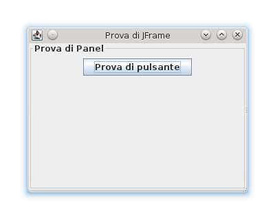
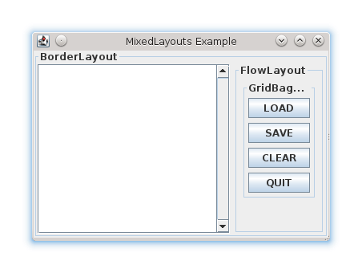

Interfacce utente grafiche (GUI) con Swing
Progettazione e Sviluppo del Software
C.D.L. Tecnologie dei Sistemi Informatici
Gianluca Aguzzi — gianluca.aguzzi@unibo.it
Angelo Filaseta — angelo.filaseta@unibo.it
Riconoscimenti
-
Questo materiale è ampiamente basato su quello realizzato dai Prof. Mirko Viroli e Roberto Casadei, che ringrazio.
-
Ogni errore riscontratovi è esclusiva responsabilità degli autori di questo documento.
Outline
Goal della lezione
- Illustrare la libreria Java Swing
- Fornire pattern di progettazione per le GUI
Argomenti
- Libreria Swing
- Panoramica dei concetti, meccanismi, e costrutti principali
- La gestione degli eventi nelle GUI ed elementi di programmazione ad eventi
- Organizzazione MVC delle GUI
Introduzione alle GUI
Graphical User Interfaces (GUI)
GUI
- Interfacce grafiche per l’interazione con l’utente
- Ritenute più semplici da utilizzare rispetto alle CUI (Console User Interfaces)
- Sfruttano la possibilità di disegnare più o meno arbitrariamente i pixel della matrice dello schermo
- Oltre allo schermo possono sfruttare altri dispositivi: mouse, tastiera,..
- Si appoggiano su astrazioni grafiche (pulsanti, icone, finestre)
Gestione delle GUI in Java
- Abstract Window Toolkit (AWT) in Java 1 e 2 – basso livello
- Java Swing in Java >= 5
- Costruito sopra AWT
- Alternative: JavaFX (consigliato per applicazioni moderne), SWT (usato da Eclipse)
AWT e Swing: UML
AWT, Swing e concetti principali
I due package
-
java.awt: Classi base e implementazioni supportate dal S.O.- non molto utili da guardare in dettaglio
- fornisce comunque l’architettura base
-
javax.swing: implementazioni gestite “pixel per pixel”- le classi
J*e quelle sottostanti
- le classi
Alcune classi base di Swing
JWindow: componente piazzabile nel desktop (senza cornice)JFrame: finestra con “cornice” (menù, barra, icone chiusura)JPanel: pannello di componenti inseribili in unJFrameJComponent: componente (pulsante, etichetta, campo di testo, …)JDialog: finestra di dialogo
Concetti principali
Un primo esempio
import javax.swing.*;
public class TrySwing {
public static void main(String[] args) {
// Creo il frame e imposto titolo e altre proprietà
final JFrame frame = new JFrame();
frame.setTitle("Prova di JFrame");
frame.setDefaultCloseOperation(JFrame.DO_NOTHING_ON_CLOSE);
frame.setSize(320, 240);
// Creo un pannello e gli imposto il bordino
final JPanel panel = new JPanel();
// Aggiungo il pannello ai 'contenuti' del frame
frame.getContentPane().add(panel);
// Aggiungo un pulsante al pannello
panel.add(new JButton("Prova di pulsante"));
// Alla fine rendo visible il JFrame
frame.setVisible(true);
}
}

Vari JComponent disponibili..
import javax.swing.*;
public class Components {
public static void main(String[] args) {
// Creo il frame e imposto titolo e altre proprietà
final JFrame frame = new JFrame();
frame.setTitle("Vari JComponent");
frame.setDefaultCloseOperation(JFrame.EXIT_ON_CLOSE);
frame.setSize(600, 100);
// Creo un pannello senza bordino e lo aggiungo al frame
final JPanel panel = new JPanel();
frame.getContentPane().add(panel);
final String[] strings = new String[] { "str1", "str2", "str3", "str4" };
// Aggiungo vari componenti
panel.add(new JButton("JButton"));
panel.add(new JLabel("JLabel"));
panel.add(new JTextField("JTextField", 15));
panel.add(new JList<String>(strings));
panel.add(new JComboBox<String>(strings));
panel.add(new JTextArea(5, 10));
// Alla fine rendo visible il JFrame
frame.setVisible(true);
}
}
Classi di Swing
Materiale da consultare
Collezione di riferimenti utili
-
JavaDoc delle librerie:
http://docs.oracle.com/javase/8/docs/api
-
Tutorial ufficiali:
http://docs.oracle.com/javase/tutorial/uiswing/
Nota
- Questa lezione illustra le tecniche principali
- Occasionalmente mostreremo il funzionamento di vari componenti
- Costruire GUI efficaci (e avanzate) richiede però conoscenze ulteriori ottenibili all’occorrenza dai riferimenti di cui sopra
Il layout dei pannelli
Il problema del Layout di un pannello
Problema
- Intervenire sulla politica di dislocazione dei componenti
- Scegliere politiche indipendenti dalle dimensioni della finestra
- Organizzare tali selezioni con una buona organizzazione OO
La classe LayoutManager e il pattern “Strategy”
- Al pannello si passa un oggetto di
LayoutManager - È lui che incapsula la strategia di inserimento dei componenti
- Vari casi:
FlowLayout(default),BorderLayout,GridBagLayout,.. (tipicamente da comporre tra loro) - Vedere: http://docs.oracle.com/javase/tutorial/uiswing/layout/visual.html
- Il metodo
add()diJPanelaccetta un ulteriore argomento (Objectoint) usato dal Layout Manager
Senza Layout – deprecabile
import java.awt.*;
import javax.swing.*;
public class UseNoLayout {
public static void main(String[] args) {
final JFrame frame = new JFrame();
frame.setTitle("AbsoluteLayout Example");
frame.setDefaultCloseOperation(JFrame.EXIT_ON_CLOSE);
frame.setResizable(false); // o true..
frame.setSize(320, 200);
final JPanel panel = new JPanel();
panel.setLayout(null); // Nessun layout
frame.getContentPane().add(panel);
final JButton b1 = new JButton("Button 1");
final JButton b2 = new JButton("Button 2");
panel.add(b1);
panel.add(b2);
// Imposto dimensione e posizione
Dimension size = b1.getPreferredSize();
b1.setBounds(25, 5, size.width, size.height);
size = b2.getPreferredSize();
b2.setBounds(55, 40, size.width * 3, size.height * 3);
frame.setVisible(true);
}
}
BorderLayout
import java.awt.*;
import javax.swing.*;
public class UseBorderLayout {
public static void main(String[] args) {
final JFrame frame = new JFrame();
frame.setTitle("BorderLayout Example");
frame.setSize(320, 200);
final JPanel panel = new JPanel();
panel.setLayout(new BorderLayout()); // Imposto il layout
frame.getContentPane().add(panel);
// Nota l'argomento aggiuntivo di tipo int
// Nota che i pulsanti non usano la loro dim. preferita!
panel.add(new JButton("North"), BorderLayout.NORTH);
panel.add(new JButton("South"), BorderLayout.SOUTH);
panel.add(new JButton("Center"), BorderLayout.CENTER);
panel.add(new JButton("East"), BorderLayout.EAST);
panel.add(new JButton("West"), BorderLayout.WEST);
frame.setVisible(true);
}
}
Lavorare specializzando JFrame: MyFrame
import java.awt.*;
import javax.swing.*;
/* Specializzazione di JFrame:
* - JFrame è Serializable!
* - Il costruttore accetta titolo e layout-manager
* - Si aggiunge il JPanel
* - Un metodo getMainPanel() ci dà il pannello
*/
public class MyFrame extends JFrame {
private final JPanel jp;
public MyFrame(String title, LayoutManager lm) {
super(title);
this.setDefaultCloseOperation(JFrame.EXIT_ON_CLOSE);
this.setSize(320, 200);
// Il layout-manager può essere passato al costruttore di JPanel
this.jp = new JPanel(lm);
this.getContentPane().add(this.jp);
}
public JPanel getMainPanel() {
return this.jp;
}
}
Nuova versione UseBorderLayout2
import java.awt.*;
import javax.swing.*;
public class UseBorderLayout2 {
public static void main(String[] args) {
final MyFrame frame = new MyFrame("BorderLayout Example", new BorderLayout());
frame.getMainPanel().add(new JButton("North"), BorderLayout.NORTH);
frame.getMainPanel().add(new JButton("South"), BorderLayout.SOUTH);
frame.getMainPanel().add(new JButton("Center"), BorderLayout.CENTER);
frame.getMainPanel().add(new JButton("East"), BorderLayout.EAST);
frame.getMainPanel().add(new JButton("West"), BorderLayout.WEST);
frame.setVisible(true);
}
/*
* Note sul BorderLayout:
* - In NORTH e SOUTH usa l'altezza preferita del componente
* - In EAST e WEST usa la larghezza preferita del componente
* - Altrove no..
*/
}
Qualche modifica: UseBorderLayout3
import java.awt.*;
import javax.swing.*;
public class UseBorderLayout3 {
public static void main(String[] args) {
final BorderLayout b = new BorderLayout();
b.setHgap(10); // Parametri addizionali del lay-man
b.setVgap(10);
final MyFrame frame = new MyFrame("BorderLayout Example Bis", b);
final JButton button = new JButton("North");
final Dimension d = button.getPreferredSize(); // imposto le dim..
button.setPreferredSize(new Dimension(d.width, d.height * 2));
frame.getMainPanel().add(button, BorderLayout.NORTH);
frame.getMainPanel().add(new JButton("South"), BorderLayout.SOUTH);
frame.getMainPanel().add(new JButton("Center"), BorderLayout.CENTER);
frame.getMainPanel().add(new JButton("East"), BorderLayout.EAST);
// nota l'effetto di una stringa più lunga qui
frame.getMainPanel().add(new JButton("WestWest"), BorderLayout.WEST);
frame.setVisible(true);
}
}

FlowLayout
import java.awt.*;
import javax.swing.*;
public class UseFlowLayout {
public static void main(String[] args) {
final FlowLayout lay = new FlowLayout(FlowLayout.CENTER);
final MyFrame frame = new MyFrame("FlowLayout Example", lay);
frame.getMainPanel().add(new JButton("A"));
frame.getMainPanel().add(new JButton("BCD"));
frame.getMainPanel().add(new JButton("EDFGHI"));
frame.getMainPanel().add(new JButton("L"));
frame.getMainPanel().add(new JButton("MNO"));
frame.getMainPanel().add(new JButton("PQRSTU"));
frame.getMainPanel().add(new JButton("V"));
frame.getMainPanel().add(new JButton("ZZZZZZZ"));
// frame.pack(); ridimensiona la finestra: da provare!
frame.setVisible(true);
}
/*
* Note sul FlowLayout:
* - Di default mette i componenti da sx a dx, centrati
* - usa le loro dim preferite
* - va a capo quando necessario, partendo dall'alto
* .. tutti aspetti modificabili agendo sull'oggetto Layout
*/
}
Un uso combinato di FlowLayout e BorderLayout
import java.awt.*;
import javax.swing.*;
public class UseFlowBorder {
public static void main(String[] args) {
final MyFrame frame = new MyFrame("Flow and Border", new BorderLayout());
// Creo un sotto-pannello per la parte NORTH
final JPanel pNorth = new JPanel(new FlowLayout());
pNorth.add(new JButton("North 1"));
pNorth.add(new JButton("North 2"));
// Creo un sotto-pannello per la parte SOUTH
final JPanel pSouth = new JPanel(new FlowLayout(FlowLayout.RIGHT));
pSouth.add(new JButton("OK"));
pSouth.add(new JButton("Quit"));
// Grazie al polimorfismo, aggiungo pannelli
frame.getMainPanel().add(pNorth, BorderLayout.NORTH);
frame.getMainPanel().add(pSouth, BorderLayout.SOUTH);
frame.setVisible(true);
}
}
Altro uso combinato + GridBagLayout
import java.awt.*;
import javax.swing.*;
import javax.swing.border.*;
public class UseMixedLayouts {
public static void main(String[] args) {
final JTextArea textArea = new JTextArea(); // Area di testo
textArea.setLineWrap(true);
final JScrollPane scroll = new JScrollPane(textArea); // Pannello con barra
scroll.setVerticalScrollBarPolicy(ScrollPaneConstants.VERTICAL_SCROLLBAR_ALWAYS);
final JPanel pEastInternal = new JPanel(new GridBagLayout()); // Griglia flessibile
pEastInternal.setBorder(new TitledBorder("GridBagLayout"));
final GridBagConstraints cnst = new GridBagConstraints();
cnst.gridy = 0; // 1-a riga
cnst.insets = new Insets(3, 3, 3, 3); // spazio attorno al comp.
cnst.fill = GridBagConstraints.HORIZONTAL; // estensione in orizzont.
pEastInternal.add(new JButton("LOAD"), cnst);
cnst.gridy++; // prossima riga
pEastInternal.add(new JButton("SAVE"), cnst);
cnst.gridy++;
pEastInternal.add(new JButton("CLEAR"), cnst);
cnst.gridy++;
pEastInternal.add(new JButton("QUIT"), cnst);
final JPanel pEast = new JPanel(new FlowLayout());
pEast.setBorder(new TitledBorder("FlowLayout"));
pEast.add(pEastInternal);
final MyFrame frame = new MyFrame("MixedLayouts Example", new BorderLayout(5, 5));
frame.getMainPanel().add(scroll, BorderLayout.CENTER);
frame.getMainPanel().add(pEast, BorderLayout.EAST);
frame.getMainPanel().setBorder(new TitledBorder("BorderLayout"));
frame.setVisible(true);
}
}

Lavorare incapsulando il frame dentro una classe
L’indipendenza dalla tecnologia delle GUI
- sarà importante costruire GUI in modo che le scelte di basso livello dettate da Swing siano ben nascosti
- così da tenere tutto il sistema ben organizzato e ad alto livello
Tipica tecnica
- si disegni una interfaccia pulita per la guida
- i dettagli implementativi al solito siano delegati ad una classe che implementa
public interface UserInterface {
void show();
void setDimensions(int x, int y);
}
public class UserInterfaceImpl implements UserInterface {
private final MyFrame frame;
public UserInterfaceImpl() {
this.frame = new MyFrame("Flow and Border", new BorderLayout());
final JPanel pNorth = new JPanel(new FlowLayout());
pNorth.add(new JButton("North 1"));
final JPanel pSouth = new JPanel(new FlowLayout(FlowLayout.RIGHT));
pSouth.add(new JButton("OK"));
this.frame.getMainPanel().add(pNorth, BorderLayout.NORTH);
this.frame.getMainPanel().add(pSouth, BorderLayout.SOUTH);
}
public void show() {
this.frame.setVisible(true);
}
public void setDimensions(int x, int y) {
this.frame.setSize(x, y);
}
}
public class UseEncapsulatedFrame {
public static void main(String[] args) {
final UserInterface ui = new UserInterfaceImpl();
ui.setDimensions(300, 300);
ui.show();
}
}
La gestione degli eventi nelle GUI
La gestione degli eventi
Come rendere le interfacce “vive”?
- come programmare la possibilità di intercettare le varie azioni che un utente potrebbe compiere sull’interfaccia, ossia la parte “input”?
- al solito, sarebbe necessario uno strumento altamente configurabile e ben organizzato
Il pattern Observer
- È possibile “registrare” nei componenti degli oggetti “ascoltatori” (listeners)
- Quando certi eventi accadono, il componente richiama un metodo dei listener registrati
- Tale metodo contiene il codice da eseguire in risposta all’evento
- Si assume (per ora) che tale codice arrivi “velocemente” a compimento
Il pattern Observer

Subjectè la sorgente degli eventiObserversi registra con laSubject#attach(o:Observer)- Quando accade l’evento,
SubjectchiamaObserver#notify(e:Event)
Il caso dei click sui pulsanti: 3 classi
// E' il subject degli eventi
class JButton ... {
/* Sets the action command string that gets sent as part of the
* `ActionEvent` when the button is triggered. */
void setActionCommand(String s) { ... }
void addActionListener(ActionListener listener) { ... }
void removeActionListener(ActionListener listener) { ... }
}
// Interfaccia da implementare per ascoltare gli eventi
interface ActionListener ... {
void actionPerformed(ActionEvent e);
}
// Classe per rappresentare un evento
class ActionEvent ... {
String getActionCommand() { ... }
long getWhen() { ... }
...
}
Catturare gli eventi dei pulsanti con ActionCommand
import java.awt.*;
import java.awt.event.*;
import javax.swing.*;
public class UseButtonEvents {
public static void main(String[] args) {
final MyFrame frame = new MyFrame("Events Example", new FlowLayout());
final ActionListener listener = new MyActionListener();
final JButton b1 = new JButton("Say Hello");
b1.setActionCommand("hello"); // nome comando
b1.addActionListener(listener);// registro il listener
final JButton b2 = new JButton("Quit");
b2.setActionCommand("quit");
b2.addActionListener(listener);
final JButton b3 = new JButton("Looping..");
b3.setActionCommand("loop");
b3.addActionListener(listener);
frame.getMainPanel().add(b1);
frame.getMainPanel().add(b2);
frame.getMainPanel().add(b3);
frame.setVisible(true);
}
}
Corrispondente listener, come classe esterna
import java.awt.event.*;
// Nota: si potrebbero usare delle inner class
// Nota: ActionCommand "abusa" delle stringhe..
public class MyActionListener implements ActionListener {
public void actionPerformed(ActionEvent e) {
if (e.getActionCommand().equals("hello")) {
System.out.println("Hello!!");
} else if (e.getActionCommand().equals("quit")) {
System.out.println("Quitting..");
System.exit(0);
} else if (e.getActionCommand().equals("loop")) {
System.out.println("Going stuck..");
for (; true;) {
} // Nota l'effetto del loop sulla GUI
}
}
}
Versione incapsulata (inner listener + source eventi)
public class EventsFrame {
private final JButton b1 = new JButton("Say Hello");
private final JButton b2 = new JButton("Quit");
private final JButton b3 = new JButton("Looping..");
public EventsFrame() {
final MyFrame frame = new MyFrame("Events Example", new FlowLayout());
frame.getMainPanel().add(b1); // aggiungo i pulsanti
frame.getMainPanel().add(b2);
frame.getMainPanel().add(b3);
final ActionListener listener = new MyActionListener(); // listener unico
b1.addActionListener(listener);// registro il listener
b2.addActionListener(listener);// senza actionCommand!!
b3.addActionListener(listener);
frame.setVisible(true);
}
private class MyActionListener implements ActionListener {
public void actionPerformed(ActionEvent e) { // switch su getSource
if (e.getSource() == EventsFrame.this.b1) {
System.out.println("Hello!!");
} else if (e.getSource() == EventsFrame.this.b2) {
System.out.println("Quitting..");
System.exit(0);
} else if (e.getSource() == EventsFrame.this.b3) {
System.out.println("Going stuck..");
for (; true;) {
} // Nota l'effetto del loop sulla GUI
}
}
}
public static void main(String[] args) {
new EventsFrame();
}
}
Listeners come classi anonime
import java.awt.*;
import java.awt.event.*;
import javax.swing.*;
public class UseButtonEvents2 {
public static void main(String[] args) {
final JButton b1 = new JButton("Say Hello");
b1.addActionListener(new ActionListener() {
public void actionPerformed(ActionEvent e) {
System.out.println("Hello!!");
}
}); // Uso una inner class anonima..
final JButton b2 = new JButton("Quit");
b2.addActionListener(new ActionListener() {
public void actionPerformed(ActionEvent e) {
System.out.println("Quitting..");
System.exit(0);
}
}); // Uso una inner class anonima..
final MyFrame frame = new MyFrame("Events Example", new FlowLayout());
frame.getMainPanel().add(b1);
frame.getMainPanel().add(b2);
frame.setVisible(true);
}
}
Listeners come lambda
import java.awt.*;
import javax.swing.*;
public class UseButtonEvents3 {
public static void main(String[] args) {
final JButton b1 = new JButton("Say Hello");
b1.addActionListener(e -> System.out.println("Hello!!"));
final JButton b2 = new JButton("Quit");
b2.addActionListener(e -> {
System.out.println("Quitting..");
System.exit(0);
});
final MyFrame frame = new MyFrame("Events Example", new FlowLayout());
frame.getMainPanel().add(b1);
frame.getMainPanel().add(b2);
frame.setVisible(true);
}
}
Panoramica eventi-listeners
Sulla gestione degli eventi
Il flusso di controllo con le GUI di Swing
- Quando si crea un
JFrame, la JVM crea l’Event Dispatch Thread (EDT) - Quindi l’applicazione non termina quando il
maincompleta - Quando un evento si verifica la JVM fa eseguire il corrispondente codice all’EDT
- Ecco perché la GUI non risponde a nuovi eventi finché uno precedente non è stato gestito
- Per gestire con migliore flessibilità le GUI servono meccanismi di programmazione concorrente
Alcune funzionalità avanzate delle GUI
GUI con I/O: listeners che modificano l’interfaccia
import java.awt.*;
import java.awt.event.*;
import javax.swing.*;
public class UseIOGUI {
public static void main(String[] args) {
final JTextField tf = new JTextField(10);
final JLabel lb = new JLabel("Result: 0");
final JButton bt = new JButton("Multiply by 2");
bt.addActionListener(new ActionListener() {
public void actionPerformed(ActionEvent e) {
String s = tf.getText(); // "21"
int n = Integer.parseInt(s); // 21
lb.setText("Result :" + n * 2);
}
});
final FlowLayout lay = new FlowLayout(FlowLayout.CENTER, 10, 10);
final MyFrame frame = new MyFrame("I/O Example", lay);
frame.getMainPanel().add(tf);
frame.getMainPanel().add(lb);
frame.getMainPanel().add(bt);
frame.setVisible(true);
}
}
GUI con Layout dinamico
import java.awt.*;
import java.awt.event.*;
import javax.swing.*;
public class UseDynamicLayout {
public static void main(String[] args) {
final FlowLayout lay = new FlowLayout(FlowLayout.CENTER, 10, 10);
final MyFrame frame = new MyFrame("Adding Buttons", lay);
final JPanel panel = frame.getMainPanel();
final JButton bt = new JButton("Add a Button");
bt.addActionListener(new ActionListener() {
int count = 0;
public void actionPerformed(ActionEvent e) {
panel.add(new JButton("Button" + count++));
panel.validate(); // forza il ricalcolo del layout!
}
});
panel.add(bt);
frame.setVisible(true);
}
}

Uso di un pannello come Canvas
import java.awt.*;
import java.awt.event.*;
import javax.swing.*;
import javax.swing.border.*;
public class UseCanvas {
public static void main(String[] args) {
final DrawPanel pCenter = new DrawPanel();
pCenter.setBorder(new TitledBorder("Circles here.."));
// Intercetto i click del mouse!
// L'Adapter già implementa banalmente i metodi, quindi basta fare un override
pCenter.addMouseListener(new MouseAdapter() {
public void mouseClicked(MouseEvent e) {
pCenter.addPoint(e.getX(), e.getY());
pCenter.repaint();
}
});
// Intercetto il click sul pulsante
final JPanel pEast = new JPanel(new FlowLayout());
final JButton bt = new JButton("Draw");
bt.addActionListener(new ActionListener() {
public void actionPerformed(ActionEvent e) {
pCenter.addRandomPoint();
pCenter.repaint();
}
});
pEast.add(bt);
final MyFrame frame = new MyFrame("Canvas Example", new BorderLayout());
frame.getMainPanel().add(pCenter, BorderLayout.CENTER);
frame.getMainPanel().add(pEast, BorderLayout.EAST);
frame.setResizable(false); // non estendibile!!
frame.setVisible(true);
}
}
La classe DrawPanel
// Specializzazione ad-hoc per un JPanel
public class DrawPanel extends JPanel {
private static final long serialVersionUID = 7114066347061701832L;
private static final int RADIUS = 30;
private static final Random RND = new Random();
private final Map<Point, Color> circles = new HashMap<>();
// override del metodo di disegno
protected void paintComponent(Graphics g) {
super.paintComponent(g);
for (Map.Entry<Point, Color> e : this.circles.entrySet()) {
g.setColor(e.getValue());
g.fillOval(e.getKey().x, e.getKey().y, RADIUS, RADIUS);
}
}
// Metodo per aggiungere nuovi cerchi in posizione random
public void addRandomPoint() {
int x = RND.nextInt(this.getWidth());
int y = RND.nextInt(this.getHeight());
this.addPoint(x, y);
}
// Metodo per aggiungere nuovi cerchi
public void addPoint(int x, int y) {
final Color c = new Color(RND.nextInt(256), RND.nextInt(256), RND.nextInt(256));
this.circles.put(new Point(x - RADIUS / 2, y - RADIUS / 2), c);
}
}
Uso delle finestre di dialogo
import java.awt.*;
import java.awt.event.*;
import javax.swing.*;
public class UseDialogs {
public static void main(String[] args) {
final FlowLayout fl = new FlowLayout(FlowLayout.CENTER, 10, 10);
final MyFrame frame = new MyFrame("Dialogs Example", fl);
frame.setDefaultCloseOperation(WindowConstants.DO_NOTHING_ON_CLOSE);
frame.addWindowListener(new WindowAdapter() {
public void windowClosing(WindowEvent e) {
int n = JOptionPane.showConfirmDialog(frame,
"Do you really want to quit?",
"Quitting..", JOptionPane.YES_NO_OPTION);
if (n == JOptionPane.YES_OPTION) {
System.exit(0);
}
}
});
final JTextField tf = new JTextField(10);
final JLabel lb = new JLabel("Result: 0");
final JButton bt = new JButton("Multiply by 2");
bt.addActionListener(new ActionListener() {
public void actionPerformed(ActionEvent e) {
try {
lb.setText("Result :" + Integer.parseInt(tf.getText()) * 2);
} catch (Exception ex) {
JOptionPane.showMessageDialog(frame, "An integer please..");
}
}
});
frame.getMainPanel().add(tf);
frame.getMainPanel().add(lb);
frame.getMainPanel().add(bt);
frame.setVisible(true);
}
}
Le GUI builder
Cosa sono?
- Sono sistemi software usabili per creare il codice che genera le interfacce
- Permettono una descrizione WYSIWYG (What you see is what you get)
- Spesso non sono particolarmente semplici da usare
- Con un po’ di esperienza e una buona conoscenza delle librerie sottostanti, possono essere usati con successo
- Se li si usasse, si deve però anche comprendere (e criticare) il codice che producono
WindowBuilder: un plugin per Eclipse
Organizzazione applicazioni grafiche con MVC
Il pattern architetturale MVC
MVC – divide l’applicazione in 3 parti
Model: modello OO del dominio applicativo del sistemaView: gestisce le interazioni con l’utente (input e output)Controller: gestisce il coordinamento fra Model e View
Applicazione del MVC
Sulla costruzione di applicazioni con GUI
- Specialmente se non esperti, possono essere alquanto laboriose
- Usare un approccio strutturato sembra richiedere più tempo nel complesso, ma in realtà porta a soluzione più facilmente modificabili e controllabili
Alcune linee guida
- Usare il pattern MVC per la struttura generale
- Identificate le varie “interazioni”, e quindi costruire le interfacce dei vari componenti bene fin dall’inizio
- Cercare massima indipendenza fra i vari componenti (interfacce con meno metodi possibile)
- Costruire e testare modello e GUI separatamente (M e V), poi collegare il tutto col controllore (C) che risulterà particolarmente esile
- Per la GUI eventualmente usare un GUI Builder
MVC con le GUI: un esempio di struttura

Componenti e loro interazioni
MVC
Model: incapsula dati e logica relativi al dominio della applicazioneView: incapsula la GUI, le sue sottoparti, e la logica di notificaController: intercetta gli eventi della View, comanda le modifiche al modello, cambia di conseguenza la View
Interfacce – nomi da modificare in una applicazione concreta
ModelInterface: letture/modifiche da parte del ControllerViewObserver: comandi inviati dalla view al controller (void)ViewInterface: comandi per settare la view, notifiche a fronte dei comandi (errori..)
Un esempio di applicazione: DrawNumber
Interfaccia del model: DrawNumber
public interface DrawNumber {
void reset();
DrawResult attempt(int n) throws AttemptsLimitReachedException;
}
public enum DrawResult {
YOURS_IS_LOWER, YOURS_IS_HIGHER, YOU_WON;
}
public class AttemptsLimitReachedException extends Exception {
public AttemptsLimitReachedException() {
}
}
Implementazione del model: DrawNumberImpl (1/2)
public class DrawNumberImpl implements DrawNumber {
private int choice;
private final int min;
private final int max;
private final int attempts;
private int remainingAttempts;
private final Random random = new Random();
public DrawNumberImpl(final int min, final int max, final int attempts) {
this.min = min;
this.max = max;
this.attempts = attempts;
this.reset();
}
public void reset() {
this.remainingAttempts = this.attempts;
this.choice = this.min + random.nextInt(this.max - this.min + 1);
}
Implementazione del model: DrawNumberImpl (2/2)
public DrawResult attempt(int n) throws AttemptsLimitReachedException {
if (this.remainingAttempts == 0) {
throw new AttemptsLimitReachedException();
}
if (n < this.min || n > this.max) {
throw new IllegalArgumentException();
}
if (n > this.choice) {
return DrawResult.YOURS_IS_HIGHER;
}
if (n < this.choice) {
return DrawResult.YOURS_IS_LOWER;
}
return DrawResult.YOU_WON;
}
}
Interfacce della view: DrawNumberView
public interface DrawNumberView {
void setObserver(DrawNumberViewObserver observer);
void start();
void numberIncorrect();
void limitsReached();
void result(DrawResult res);
}
public interface DrawNumberViewObserver {
void newAttempt(int n);
void resetGame();
void quit();
}
Implementazione della view: DrawNumberViewImpl (1/3)
public class DrawNumberViewImpl implements DrawNumberView {
private static final String FRAME_NAME = "Draw Number App";
private static final String QUIT = "Quit";
private static final String RESET = "Reset";
private static final String GO = "Go";
private static final Dimension WINDOW_DIMENSION = new Dimension(320, 200);
private static final Map<DrawResult, String> messages = new HashMap<>();
static { // inizializzatore statico
messages.put(DrawResult.YOURS_IS_HIGHER, "Your number is too high");
messages.put(DrawResult.YOURS_IS_LOWER, "Your number is too low");
messages.put(DrawResult.YOU_WON, "You won the game!!");
}
private DrawNumberViewObserver observer;
private JFrame frame = new JFrame(FRAME_NAME);
public DrawNumberViewImpl() {
frame.setDefaultCloseOperation(JFrame.EXIT_ON_CLOSE);
frame.setSize(WINDOW_DIMENSION);
frame.getContentPane().add(new JPanel(new BorderLayout()));
final JPanel pNorth = new JPanel(new FlowLayout());
final JTextField tNumber = new JTextField(10);
final JButton bGo = new JButton(GO);
pNorth.add(tNumber);
pNorth.add(bGo);
Implementazione della view: DrawNumberViewImpl (2/3)
final JPanel pSouth = new JPanel(new FlowLayout(FlowLayout.RIGHT));
final JButton bReset = new JButton(RESET);
final JButton bQuit = new JButton(QUIT);
pSouth.add(bReset);
pSouth.add(bQuit);
frame.getContentPane().add(pNorth, BorderLayout.NORTH);
frame.getContentPane().add(pSouth, BorderLayout.SOUTH);
bGo.addActionListener(new ActionListener() {
public void actionPerformed(ActionEvent e) {
try {
observer.newAttempt(Integer.parseInt(tNumber.getText()));
} catch (NumberFormatException exception) {
JOptionPane.showMessageDialog(frame, "An integer please..");
}
}
});
bQuit.addActionListener(new ActionListener() {
public void actionPerformed(ActionEvent e) {
if (confirmDialog("Confirm quitting?", "Quit")) {
observer.quit();
}
}
});
bReset.addActionListener(new ActionListener() {
public void actionPerformed(ActionEvent e) {
if (confirmDialog("Confirm resetting?", "Reset")) {
observer.resetGame();
}
Implementazione della view: DrawNumberViewImpl (3/3)
});
}
public void start() {
this.frame.setVisible(true);
}
private boolean confirmDialog(String question, String name) {
return JOptionPane.showConfirmDialog(frame, question, name,
JOptionPane.YES_NO_OPTION) == JOptionPane.YES_OPTION;
}
public void setObserver(DrawNumberViewObserver observer) {
this.observer = observer;
}
public void numberIncorrect() {
JOptionPane.showMessageDialog(frame, "Incorrect Number.. try again",
"Incorrect Number", JOptionPane.ERROR_MESSAGE);
}
public void limitsReached() {
JOptionPane.showMessageDialog(frame, "You lost.. a new game starts",
"Lost", JOptionPane.WARNING_MESSAGE);
}
public void result(DrawResult res) {
JOptionPane.showMessageDialog(frame, messages.get(res),
"Result", JOptionPane.PLAIN_MESSAGE);
}
}
Implementazione del controller: DrawNumberApp (1/2)
import it.unibo.guis.swing.mvc.model.DrawResult;
import it.unibo.guis.swing.mvc.view.DrawNumberView;
import it.unibo.guis.swing.mvc.view.DrawNumberViewImpl;
import it.unibo.guis.swing.mvc.view.DrawNumberViewObserver;
public class DrawNumberApp implements DrawNumberViewObserver {
private static final int MIN = 0;
private static final int MAX = 100;
private static final int ATTEMPTS = 10;
private final DrawNumber model;
private final DrawNumberView view;
public DrawNumberApp() {
this.model = new DrawNumberImpl(MIN, MAX, ATTEMPTS);
this.view = new DrawNumberViewImpl();
this.view.setObserver(this);
this.view.start();
}
public void newAttempt(int n) {
try {
final DrawResult result = this.model.attempt(n);
this.view.result(result);
if (result == DrawResult.YOU_WON) {
this.quit();
}
} catch (IllegalArgumentException e) {
Implementazione del controller: DrawNumberApp (2/2)
this.view.numberIncorrect();
} catch (AttemptsLimitReachedException e) {
this.view.limitsReached();
}
}
public void resetGame() {
this.model.reset();
}
public void quit() {
System.exit(0);
}
public static void main(String[] args) {
new DrawNumberApp();
}
}
Linee guida generali consigliate su MVC
Metodologia proposta
-
progettare le 3 interfacce
- M: metodi di “dominio”, chiamati da C
- C: metodi (
void) chiamati da V, esprimono “azioni utente” - V: metodi (
void) chiamati da C, esprimono richieste di visualizzazione
-
la tecnologia scelta per le GUI sia interna a V, e mai menzionata altrove o nelle interfacce
-
implementare separatamente M, V e C, poi comporre e testare
-
in progetti reali, M, V e C si compongono di varie parti
Aspetti
- MVC è implementato in vari modi, o esiste in diverse varianti
- Model-View-ViewModel (MVVM), Model-View-Presenter (MVP), …
- l’approccio proposto è particolarmente indicato per la sua semplicità
- si usino altri approcci se non peggiorativi